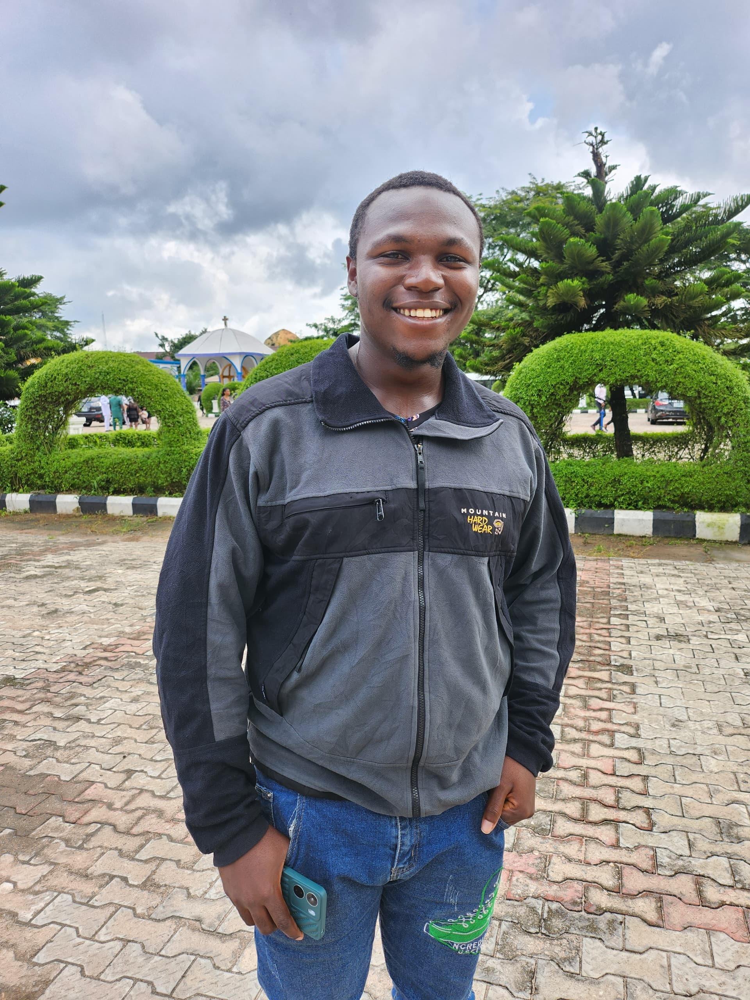
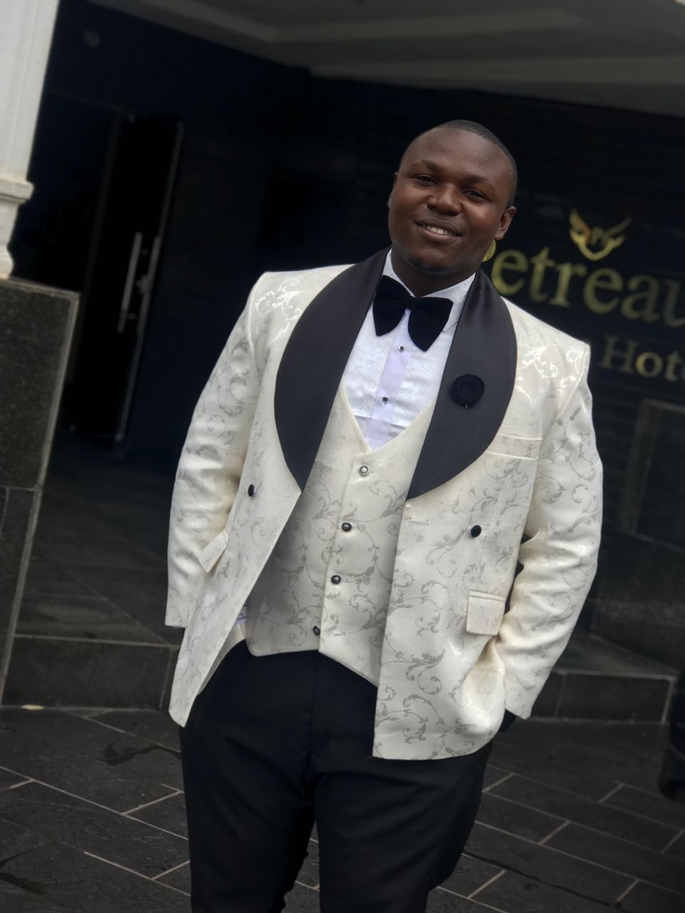
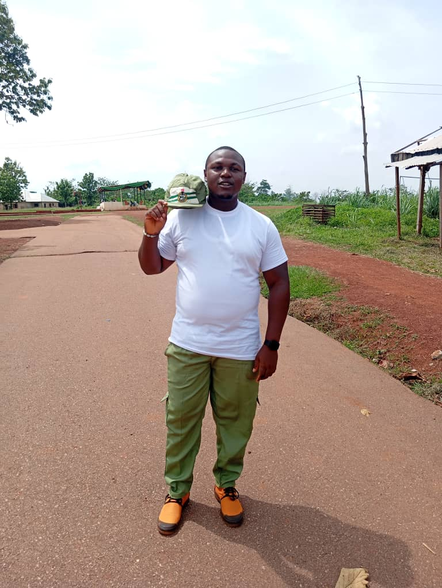
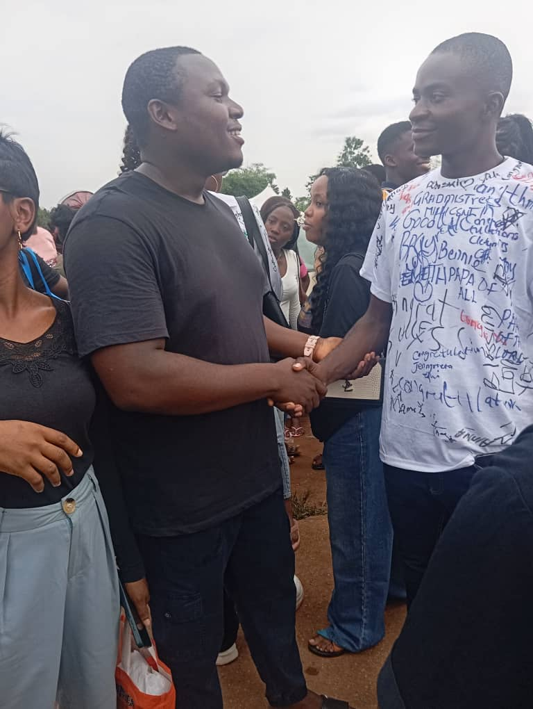
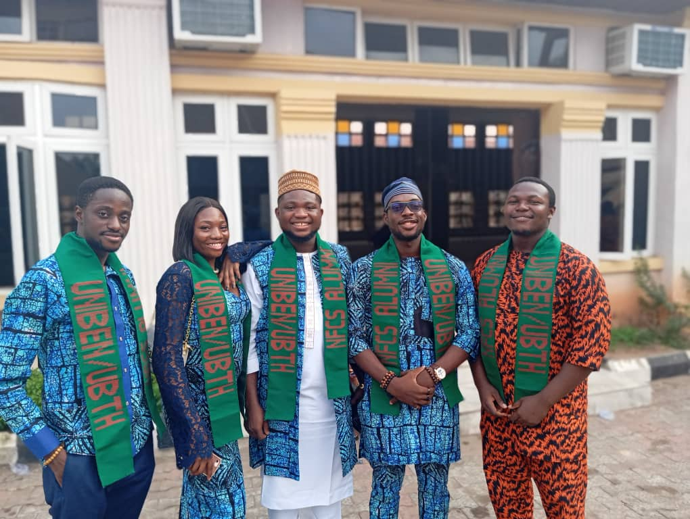

Name: CHIBUEZE OGADIMMA CORNELIUS
Email: dominicsavio4allmen@gmail.com
Phone: 08149773340
Address: No 2 Rainbow house, ugha street, Emene, Enugu State
Aspiring Flutter developer with hands-on experience building mobile applications using flutter, Dart, REST APIs, and firebase. passionate about creating functional and user-friendly application and eager to contribute to real world projects while continously improving technical skills during NYSC.
Internship
Worked with the technician in the fabrication of various equipment in the company
Physics Teacher
Discovered the secret to successfully writing WAEC and Jamb, and the problem that students face.
Mathematics and physics Teacher
Guided the children personally, ensuring they all pick interest in mathematics and physics.
Internship
I worked under an Engineer, learning to install, and set up farm machinery. Worked under supervision to complete assigned tasks. Before going to site I would be the one to buy what is needed, in some cases, I will be the one to go and supervise other workers.
B.Eng in Agricultural Engineering
Second class upper
2025
Developed a cross-platform calculator using Flutter and Dart Designed responsive user interface with reusable widgets Implemented arithmetic operations and real-time result updates Managed application state for dynamic user interaction
Visit my github account!Developed a cryptocurrency price tracking app using Flutter Integrated REST API to fetch real-time Bitcoin exchange rates Parsed JSON data and updated UI dynamically based on user-selected currency Implemented asynchronous network requests and state updates
Visit my github account!Developed a real-time messaging application using Flutter and Firebase Implemented user authentication and cloud-based data storage with Firebase Enabled real-time message updates using asynchronous data streams Designed responsive chat interface with dynamic message rendering
Visit my github account!



